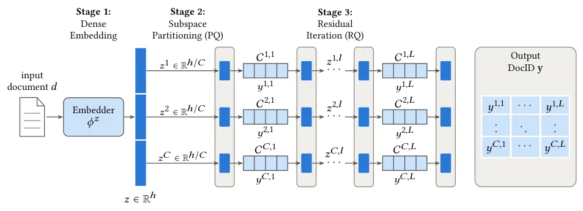
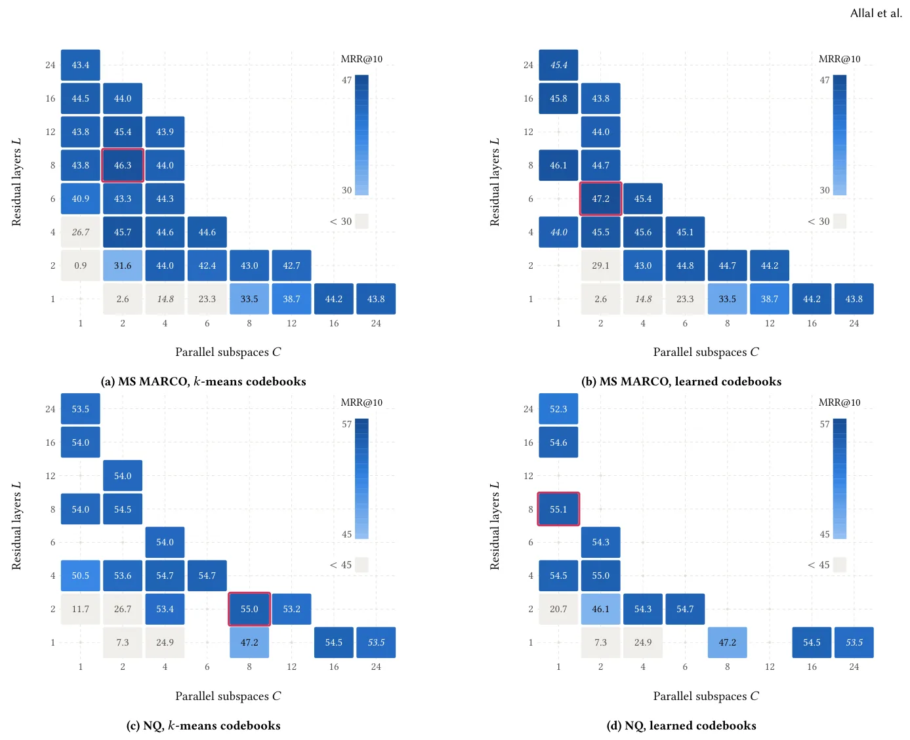
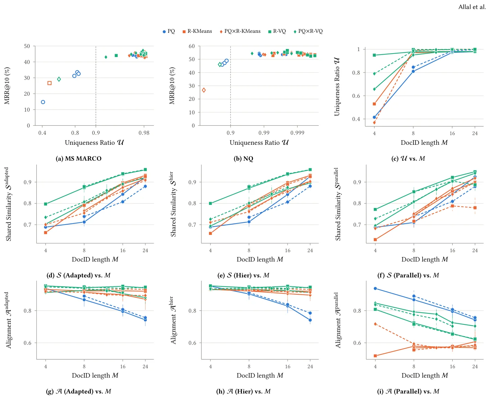

O problema da identidade dos documentos
Recuperação generativa de informação (Generative Information Retrieval, GIR) reformula a busca de documentos como um problema de geração de sequências: em vez de ranquear candidatos recuperados por um índice, um modelo seq2seq recebe uma query e gera diretamente o identificador do documento relevante. A ideia é que, se os identificadores forem bem desenhados, o modelo aprende a navegar o espaço semântico durante a decodificação, tomando decisões de vizinhança em níveis progressivamente mais finos.
O desempenho de GIR depende crucialmente de como você codifica cada documento em um DocID discreto. Identificadores arbitrários — números sequenciais, hashes aleatórios — não carregam estrutura semântica. A abordagem dominante usa quantização vetorial: embeddings densos de documentos são mapeados para sequências de tokens inteiros, cada token escolhido de um codebook finito. Dois paradigmas coexistem: Product Quantization (PQ), que particiona o vetor em subespaços independentes e quantiza cada um em paralelo, e Residual Quantization (RQ), que quantiza iterativamente o erro residual da etapa anterior, construindo uma hierarquia.
Apesar da popularidade, o espaço de design permanece inexplorado. A maioria dos papers fixa um único método, um tamanho de codebook V e um comprimento de DocID M, sem variar sistematicamente os hiperparâmetros. PQ e RQ são tratados como escolhas disjuntas, ignorando configurações híbridas. E avaliar a qualidade de um esquema de DocID exige treinar um modelo completo de ponta a ponta, tornando a iteração cara e opaca.
Três perguntas de pesquisa
Os autores estruturam a investigação em torno de três questões. Primeira: como o tamanho do codebook V, o comprimento do DocID M e o método de treinamento dos codebooks afetam a recuperação downstream, e como as variantes residuais (R-KMeans, que ajusta cada camada por k-means no resíduo; R-VQ, que aprende todas as camadas end-to-end) se comparam com PQ ao longo do espaço de design?
Segunda: um esquema híbrido Product–Residual Quantization (PQ×RQ) — que combina fatoração paralela com profundidade residual local — pode melhorar os trade-offs de recuperação? Terceira: métricas intrínsecas, calculáveis sem treinar modelo algum, conseguem diagnosticar a viabilidade estrutural de um espaço de DocIDs antes do treinamento completo?
Para responder, o trabalho propõe um framework parametrizado que unifica PQ, R-KMeans e R-VQ em uma única família e expõe o regime híbrido PQ×RQ. Dentro dessa família, os autores treinam e avaliam modelos de recuperação generativa em 60 configurações no MS MARCO 300K e 48 no Natural Questions, isolando o efeito do método de codificação, tamanho de codebook, comprimento de DocID e treinamento de codebook.

Um framework unificado para DocIDs semânticos
O framework tem três estágios. Primeiro, um encoder de documentos φ_z mapeia cada documento d para um vetor denso z de dimensão h (no caso, 768, usando gtr-t5-base congelado). Segundo, o vetor z é dividido em C sub-vetores z_c de dimensão h/C; quando C = 1, não há particionamento (RQ puro); quando C > 1, temos fatoração paralela (PQ). Terceiro, cada sub-vetor z_c é quantizado por L camadas residuais sucessivas, cada uma com um codebook C_{c,l} de V codewords.
A quantização residual funciona assim: na primeira camada (l=1), você encontra o codeword mais próximo de z_c no codebook C_{c,1} e emite seu índice y_{c,1}. Esse codeword é subtraído de z_c, gerando um resíduo r_{c,1}. Na segunda camada, você quantiza r_{c,1} com o codebook C_{c,2}, emite y_{c,2}, subtrai novamente, e assim por diante até L camadas. O DocID final é a concatenação de todos os tokens y_{c,l}, totalizando M = C × L tokens.
Essa parametrização expõe um contínuo: PQ puro corresponde a L=1 e C grande; RQ puro a C=1 e L grande; híbridos PQ×RQ têm C > 1 e L > 1. O treinamento dos codebooks também varia: R-KMeans ajusta cada camada por k-means sobre os resíduos da camada anterior; R-VQ inicializa por k-means mas depois otimiza todos os codebooks conjuntamente, minimizando a perda de reconstrução residual por 100 épocas com AdamW.
Métricas intrínsecas: diagnosticando DocIDs sem treinar
Para avaliar um espaço de DocIDs antes de qualquer treinamento de modelo, os autores definem quatro métricas intrínsecas. A primeira é a Uniqueness Ratio U: a fração de documentos que recebem DocIDs únicos. Se dois documentos compartilham o mesmo DocID (colisão), o modelo não consegue distingui-los. U < 1 indica colisões; U < 0,9 sinaliza colapso estrutural. O limite superior teórico é V^M DocIDs distintos; se V^M < N (número de documentos), colisões são inevitáveis.
A segunda métrica é a Normalized Entropy H, que mede a distribuição de uso dos tokens em cada posição do DocID. Entropia baixa indica que poucos codewords dominam, desperdiçando capacidade; entropia alta sugere uso equilibrado. A terceira é a Shared Semantic Similarity S: para cada documento, você calcula a similaridade cosseno média entre seu embedding e os embeddings dos documentos que compartilham o mesmo prefixo de DocID. S alto indica que documentos com prefixos comuns são semanticamente próximos, o que facilita a navegação coarse-to-fine.
A quarta métrica é a Contrastive Alignment Preservation A: para cada documento, você identifica seus k vizinhos mais próximos no espaço de embeddings densos e verifica quantos deles compartilham pelo menos um token no DocID. A alto significa que a estrutura de vizinhança densa é preservada no espaço discreto. Tanto S quanto A têm três variantes de cálculo (Adapted, Hier, Parallel), dependendo de como você define 'compartilhar prefixo' em um DocID híbrido.
Resultados: o contínuo entre paralelismo e hierarquia
As melhores configurações das cinco famílias (PQ, R-KMeans, R-VQ, PQ×R-KMeans, PQ×R-VQ) ficam dentro de 2,2 pontos percentuais de MRR@10 em ambos os datasets. PQ favorece grande fatoração paralela (C=16), mas os esquemas residuais puros (R-KMeans, R-VQ) superam PQ em Recall@10 e MRR@10 tanto no MS MARCO quanto no NQ. R-VQ atinge o melhor resultado no NQ (56,64% MRR@10).
Com codebooks treinados por k-means, o híbrido PQ×R-KMeans alcança 46,30% MRR@10 no MS MARCO — o melhor resultado do estudo — e 55,04% no NQ, combinando subespaços paralelos grosseiros com profundidade residual local. Isso supera o R-KMeans puro (45,47% e 54,70%). O desempenho downstream é estável ao variar o tamanho do codebook: fixando família e M, mudar V entre 128 e 512 move MRR@10 em apenas 1,06 pontos (MS MARCO) e 1,53 (NQ).
A recuperação também é estável entre encoders de documentos: com R-KMeans (1×16×512) no MS MARCO, cinco encoders diferentes (gtr-t5-base, -large, -xl, bge-base-en-v1.5, ModernBERT-base) mantêm MRR@10 entre 42,31% e 45,39%. Isso sugere que a estrutura do espaço de DocIDs importa mais do que a qualidade absoluta do embedding de entrada, dentro de uma faixa razoável de encoders.

A métrica que importa: Uniqueness Ratio
Entre as métricas intrínsecas, a Uniqueness Ratio U é a única que decide se um espaço de DocIDs é utilizável. As 60 configurações no MS MARCO e 48 no NQ com U ≥ 0,9 ficam dentro de 4,0 e 4,3 pontos de MRR@10 entre si. Configurações com U < 0,9 colapsam: o modelo não consegue distinguir documentos que compartilham o mesmo DocID, e o desempenho despenca.
A correlação entre U e MRR@10 é forte: R² de 0,94 no MS MARCO e 0,97 no NQ. Isso significa que, antes de treinar qualquer modelo, você pode calcular U — uma métrica simples, baseada apenas na contagem de DocIDs únicos — e saber se vale a pena prosseguir. Se V^M < 0,9N, colisões são inevitáveis e o espaço não é viável. Por exemplo, com V=256 e M=4, você tem no máximo 256^4 ≈ 4,3 bilhões de DocIDs distintos, suficiente para 300K documentos, mas com M=2 você tem apenas 65.536, insuficiente.
As outras métricas — Normalized Entropy H, Shared Semantic Similarity S e Contrastive Alignment Preservation A — não explicam a variação de MRR@10 entre espaços utilizáveis (R² ≤ 0,30). Elas capturam propriedades estruturais interessantes (distribuição de tokens, preservação de vizinhança), mas não predizem desempenho downstream dentro da faixa de configurações viáveis. U é o filtro necessário; além dele, a escolha entre PQ, RQ e híbridos depende de outros trade-offs.

Quando usar cada método
R-VQ, que aprende os codebooks end-to-end, é o método mais robusto sob orçamentos apertados de sequência (M ≤ 8). Quando o DocID precisa ser curto — por limitações de latência de decodificação ou custo computacional — R-VQ preserva melhor a estrutura semântica do que R-KMeans ou PQ. Isso se reflete no desempenho: R-VQ lidera no NQ (56,64% MRR@10) e mantém qualidade mesmo com M pequeno.
Os híbridos PQ×RQ oferecem o melhor resultado no MS MARCO (46,30% com PQ×R-KMeans), combinando a capacidade de PQ de capturar variações ortogonais em paralelo com a hierarquia fina de RQ. Isso sugere que, quando você tem orçamento de sequência moderado (M entre 8 e 24), vale a pena explorar configurações híbridas, ajustando C e L para equilibrar paralelismo e profundidade.
PQ puro, apesar de amplamente usado, não é a melhor escolha em nenhum dos cenários testados. Ele favorece C grande (16 ou 24 subespaços), mas é superado por esquemas residuais ou híbridos em ambos os datasets. A vantagem de PQ — paralelismo total, sem dependências sequenciais entre tokens — não compensa a perda de estrutura hierárquica coarse-to-fine que RQ oferece.
O que o paper não mostra
O estudo fixa deliberadamente o resto do pipeline para isolar o efeito do espaço de DocIDs. O modelo é um t5-small treinado sem a otimização de relevância pareada do DDRO original; decodificação usa busca em feixe com restrição de prefixo, não look-ahead; DocIDs são quantizados post hoc a partir de um encoder congelado, não aprendidos conjuntamente com o decoder; colisões são deixadas sem resolução, sem tokens de sufixo ou reatribuição.
Os corpora são estáticos e relativamente pequenos: no máximo 300K documentos. Recuperação generativa degrada em milhões de passagens, e documentos novos exigem re-quantização — problemas que o paper não aborda. U sinaliza colapso (U < 0,9), mas nenhuma métrica intrínseca explica MRR@10 entre espaços utilizáveis (R² ≤ 0,30). Isso significa que, depois de garantir U alto, você ainda precisa treinar para saber qual configuração é melhor.
O trabalho também não explora aprendizado conjunto de DocIDs e decoder, nem estratégias de resolução de colisões, nem escalonamento para corpora dinâmicos de milhões de documentos. Essas limitações são reconhecidas explicitamente pelos autores e apontam direções de pesquisa futura. O valor do paper está em mapear sistematicamente o espaço de design e fornecer U como filtro rápido antes do treinamento caro.
Implicações práticas
Se você está implementando recuperação generativa, o conselho prático é: calcule U antes de treinar. Se V^M < 0,9N, aumente V ou M até que U ≥ 0,9. Entre as configurações viáveis, prefira R-VQ se o orçamento de sequência for apertado (M ≤ 8), ou explore híbridos PQ×RQ se você tiver M entre 8 e 24. PQ puro não é a melhor escolha em nenhum cenário testado.
A estabilidade entre encoders sugere que você pode iterar no design de DocID sem retreinar embeddings caros. A estabilidade entre tamanhos de codebook (V entre 128 e 512 move MRR@10 em ~1 ponto) significa que V = 256 é uma escolha razoável por padrão, e você pode focar em ajustar C e L. O código, DocIDs e datasets foram liberados pelos autores, facilitando reprodução e extensão.
O trabalho não resolve todos os problemas de GIR — escalonamento, corpora dinâmicos, aprendizado conjunto — mas fornece um mapa do espaço de design e uma métrica de viabilidade que economiza tempo e recursos. Isso é especialmente valioso em um campo onde cada experimento exige treinar um modelo seq2seq completo, e iteração rápida é difícil.
O que fica
- A Uniqueness Ratio U, calculável antes de treinar, decide se um espaço de DocIDs é viável; U < 0,9 sinaliza colapso por colisões.
- Híbridos PQ×RQ alcançam 46,3% MRR@10 no MS MARCO, combinando paralelismo e hierarquia; R-VQ lidera no NQ (56,6%) e é robusto com DocIDs curtos.
- Desempenho é estável entre encoders e tamanhos de codebook (V=128–512), permitindo iterar no design de DocID sem retreinar embeddings caros.
- O framework unifica PQ, R-KMeans e R-VQ em uma família parametrizada por C subespaços paralelos e L camadas residuais, expondo o contínuo entre paralelismo e hierarquia.
Paper original: A Systematic Study of Semantic ID Spaces for Generative Information Retrieval
Comentários
Nenhum comentário ainda. Seja o primeiro.